환경설정
Burn에서는 많은 설정을 조절할 수 있습니다. 여기서 살펴보도록 하겠습니다.
일반:
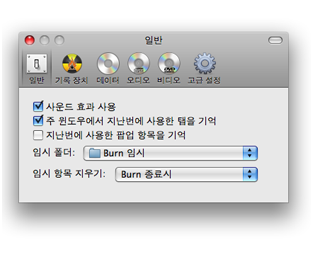
Burn의 인터페이스에 대한 일반적인 설정입니다. 임시 파일들을 어떻게
다룰 것인가에 대한 설정도 여기서 해 줄 수 있습니다.
기록 장치:
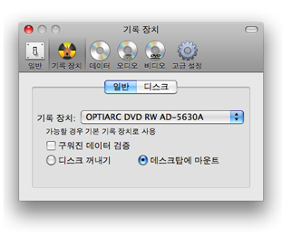
기본 기록 장치 선택과 디스크를 구운 후
어떻게 할 것인가에 대한 설정입니다.
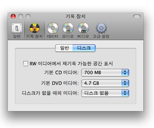
첫번째 옵션을 선택하면 기록 가능한 공간을 표시해 줍니다. 마지막 옵션은
기록 장치에 디스크가 없을 경우 어떻게 할 것인가에 대한 것입니다.
데이터:
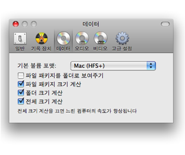
만약 Burn이 지난번에 사용한 팝업 항목을 기억(일반 탭에서 설정)하고 있지 않다면
기본 볼륨 포맷을 여기서 정할 수 있습니다. 파일 패키지는 파일로 취급되는 폴더를 말합니다.
여기서 Burn이 파일 패키지를 어떻게 보여줄 것인가도 정할 수 있습니다.
또, 크기 계산 옵션도 정할 수 있습니다. 마지막의 전체 크기 계산 옵션은 컴퓨터의 속도를 저하시키므로
느린 컴퓨터에서는 가급적이면 사용하지 않는 것을 권합니다.
오디오:
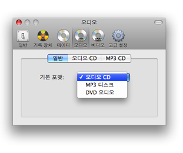
만약 Burn이 지난번에 사용한 팝업 항목을 기억(일반 탭에서 설정)하고 있지 않다면
기본 오디오 포맷을 여기서 정할 수 있습니다.
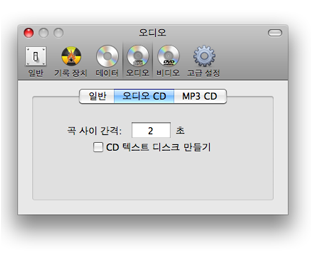
오디오 CD 디스크에 대한 설정입니다. 곡 사이 간격은 오디오 트랙을 시작하기 전에 몇 초의 간격을 둘 것인가를
숫자로 설정하는 것입니다. CD 텍스트를 디스크에 더할 수 있습니다. 몇몇 CD 플레이어는 트랙의 정보(아티스트, 앨범 등)를
얻기 위해 CD 텍스트를 이용합니다. 단, 기록 장치가 이를 지원할 경우에만 디스크에 CD 텍스트를 더할 수 있습니다.
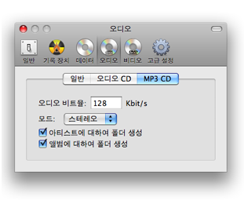
MP3 디스크에 대한 설정입니다. 오디오 비트율은 초당 몇 킬로비트로 할 것인가에 대한 설정입니다.
이 숫자가 커질수록 파일도 커지지만 음질은 향상됩니다. Burn은 MP3 디스크에 폴더도 만들 수 있습니다.
비디오:
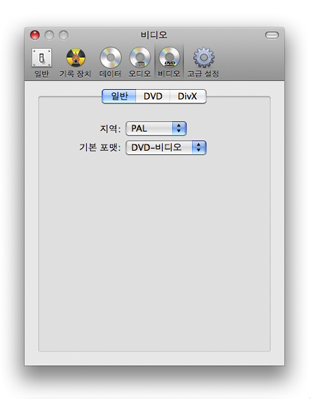
만약 Burn이 지난번에 사용한 팝업 항목을 기억(일반 탭에서 설정)하고 있지 않다면
기본 비디오 포맷을 여기서 정할 수 있습니다. 지역(PAL이나 NTSC)도 여기서 정할 수 있습니다.
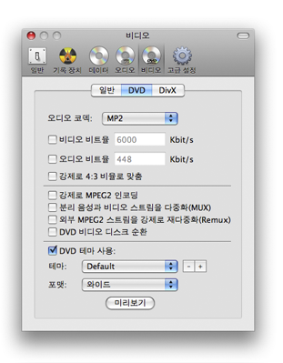
DVD 탭에서는 품질, 크기, 오디오 포맷에 대한 옵션을 설정합니다. 또, 여기서는 DVD 비디오 디스크를 만들 때
유용한 몇몇 고급 옵션도 설정할 수 있습니다. 마지막 부분은 테마와 종횡비(4:3의 표준 포맷 또는 16:9의 와이드 포맷)
설정에 대한 옵션입니다.
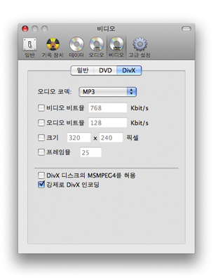
DivX 탭에서는 품질, 크기, 오디오 포맷에 대한 옵션을 설정합니다. 또, 여기서는 MSMPEG4(사용 가능한 DivX 플레이어는 한정되어 있습니다)를 허용하도록 설정할 수도 있습니다. "강제로 DivX 인코딩" 옵션을 선택하면 이미 DivX avi 파일인 것을 강제로 변환할 수도 있습니다.
고급 설정:
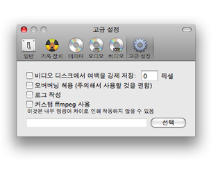
여백을 강제 저장하는 옵션은 비디오를 지나치게 크게 확대하는 기기를 사용할 경우 유용합니다.
다만, 이 기능은 종횡비를 계산하지 못하는 등 아직 불완전합니다. 오버버닝은 허용 옵션은 기본 한도를 초과하여 구울 때
경고하지 않도록 합니다. 단, 모든 기록 장치가 이를 지원하는가는 불확실하므로 주의해서 사용하셔야 합니다.
로그 작성은 Burn에서 문제가 발생했을 경우 그것을 파악하기 위해서 사용됩니다. Burn은 비디오와 오디오 파일을
변환하기 위해서 ffmpeg를 사용합니다. 커스텀 ffmpeg 사용 옵션을 통해서 자신만의 특화된 ffmpeg를 사용할 수 있는데,
이것은 기본과의 차이점 때문에 작동하지 않을 수도 있음을 염두에 두셔야 합니다.